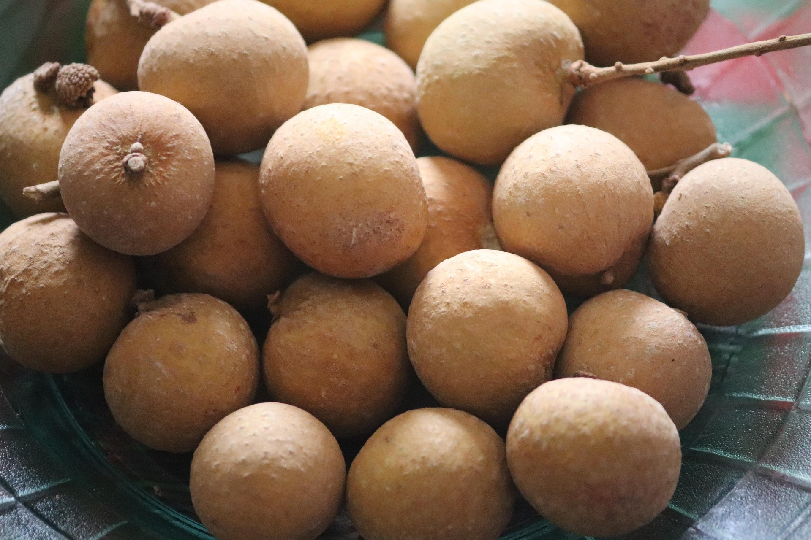

Longan is a tropical fruit tree known for its small round fruits with sweet translucent flesh. It is commonly grown in Southeast Asia and thrives in warm tropical climates. Longan fruits are popular for fresh eating, desserts, and drinks, making them suitable for orchards, home gardens, and tropical farming projects.
Needs full sunlight daily for healthy tree growth and better fruit production.
Water regularly to maintain moist soil, especially during dry weather.
Best growth at 22°C – 34°C in warm and humid tropical environments.
Use fertile, well-draining soil rich in compost and organic nutrients.
Fruits are harvested when they become light brown and fully ripe.
Consumed fresh, used in desserts, herbal drinks, canned fruits, and sweet soups.
Cause: Nutrient deficiency or poor watering.
Solution: Add fertilizer and water consistently.
Cause: Poor drainage and excessive watering.
Solution: Improve soil drainage and avoid overwatering.
Cause: Water stress or lack of nutrients.
Solution: Maintain regular watering and fertilization.
Cause: Common tropical fruit pests.
Solution: Keep orchard clean and inspect fruits regularly.
Cause: Poor soil quality or insufficient sunlight.
Solution: Improve soil fertility and provide full sunlight.